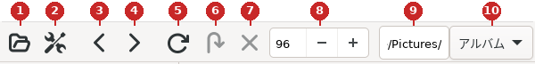
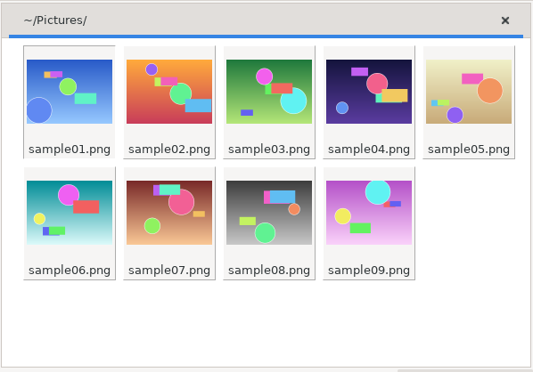
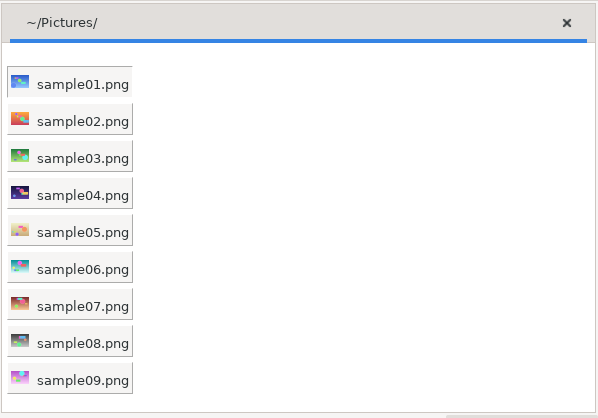
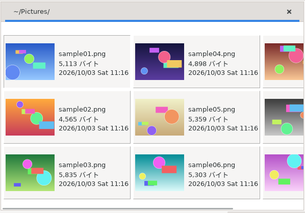
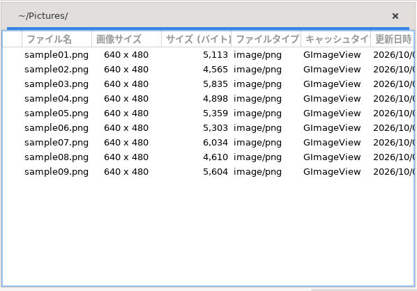
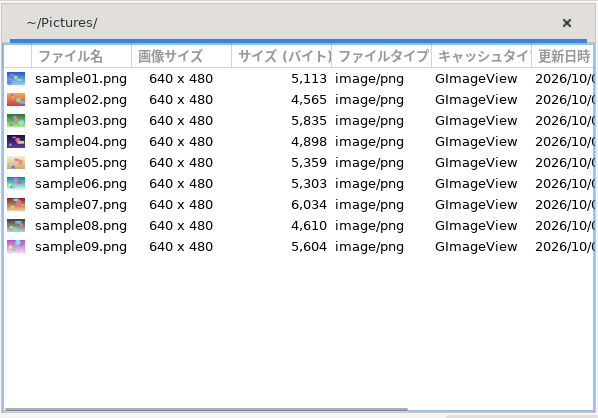
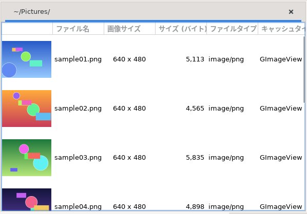
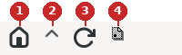
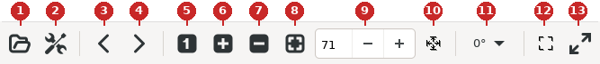

ここではツールバーの各ボタンについて説明します。ツールバーの画像の番号は、説明の項目の番号に対応しています。メニューバーに同等の機能があるボタンについては、メニューバーの項目 (項3) も参照して下さい。
項目名は、ボタンにマウスカーソルを合わせた時に表示されるポップアップ内容に合わせています。

サムネイルウィンドウのツールバー (既定の設定、番号は下の説明に対応)
[ファイル | 開く]と同じです。
[編集 | 設定]と同じです。
前のタブ(1つ左)をアクティブにします。[タブ | 前のページ]と同じです。
次のタブ(1つ右)をアクティブにします。[タブ | 次のページ]と同じです。
[編集 | キャッシュ再読込]と同じです。
ディレクトリビューのマウスメニューから、サムネイルを再帰的に読み込みを行った時に、任意のディレクトリのサムネイル展開をスキップします。
スキップされたタブ(ディレクトリ)は、ファイル名だけの表示となります。サムネイルを作成していない時は使えません。
ディレクトリビューのマウスメニューから、[サムネイルを再帰的に読み込み]を行った時に、それを完全に中止します。サムネイルを作成していない時は使えません。
サムネイルサイズを変更します。
ここに任意の値を入れ、Enter した後に、「キャッシュ再読込」「全てのサムネイルを再作成」のどちらかを行うことによって、サムネイルが新しいサイズになります。
サムネイルへの反映を、メニューからではなくショートカットキーで行う場合、ESC キーを押して、サイズ入力部からフォーカスを外してください。フォーカスを外さないと、その文字が入力されてしまいます。
ここでの変更はアクティブになっていたタブにのみ有効です。
キャッシュ再読込の方法については、Tips の「[リスト更新]・[キャッシュ再読込]・[全てのサムネイルを再作成]の違いについて」を参照して下さい。
アクティブになっているタブのパスが表示されます。
この欄に、まだタブ表示されていないディレクトリを指定すると、そのディレクトリに画像があった場合のみ、新規にタブを開きます。また、ここではタブ補完が可能です。
アクティブになっているタブの、表示モードを変更します。ここでの指定はアクティブになっているタブにのみ有効です。指定できるのは以下の6つです。下の画像は、ウィンドウを広げた状態のサムネイルビューです。
アルバム : サムネイルを横に並べ、その下にファイル名を表示します。

アルバム
アルバム2 : 小さなサムネイルとファイル名を、縦に並べて表示します。

アルバム2
アルバム3 : サムネイルの横にファイル名・サイズ・更新日時を表示します。上から下へ並べ、下まで来ると次の列に続きます。

アルバム3
詳細 : ファイル名・画像サイズ・サイズ・ファイルタイプなどを表にして表示します。表示するコラムは [設定 | サムネイルウィンドウ | サムネイルビュー | 詳細ビュー] (項6.3.2.3) で指定します。

詳細
詳細 + アイコン : 「詳細」の各行の先頭に、小さなサムネイルを表示します。

詳細 + アイコン
詳細 + サムネイル : 「詳細」の各行の先頭に、サムネイルを表示します。

詳細 + サムネイル

ディレクトリビューのツールバー (番号は下の説明に対応)
ディレクトリビューのカーソルをユーザのホームディレクトリ直下に変更すると同時に、全てのツリーを閉じます。サムネイルビューへの影響はありません。
現在のトップディレクトリを、さらに1つ上に上げます。
このコマンドは、マウスメニューのトップをここに変更を行った後に使うと便利です。
ディレクトリビューを更新します。
主に、コマンドラインからディレクトリ操作(新規作成・削除)を行った時に、それらを反映させるために使用します。
ディレクトリビューへの、ドットディレクトリ表示 ON/OFF です。

イメージウィンドウのツールバー (既定の設定、番号は下の説明に対応)
ここに示す、イメージウィンドウ・イメージビューのズーム(拡大縮小)、フィットなどの項目は、[設定 | イメージウィンドウ] の自動的に画像のサイズにリサイズするの影響を受けます。設定によって、イメージウィンドウが自動リサイズされたりされなかったりします。
また、アスペクト比を保持する設定になっている場合、拡大縮小時にイメージビューのアスペクト比が維持されます。
[ファイル | 開く]と同じです。
[編集 | 設定]と同じです。
[移動 | 前へ]と同じです。
[移動 | 次へ]と同じです。
イメージビューを本来の画像の大きさ(100%)にします。
イメージビューの倍率を 5% 大きくします。
イメージビューの倍率を 5% 小さくします。
イメージウィンドウの大きさに、イメージビューを拡大縮小します。
イメージビューの倍率(%)を設定します。
アスペクト比を保持する設定になっている場合は、X軸スケールだけが表示されます。保持しない設定の場合は、その右に Y軸スケールも表示され、X軸・Y軸の倍率を別々に設定できます。
スケール部に入力した値に、イメージビューをズーム(拡大縮小)します。
画像の向きを、0°・90°時計回り・180°・90°反時計回りから選びます。
イメージビューのサイズに、イメージウィンドウをリサイズします。[表示 | 画像の大きさに合わせる]と同じです。
全画面表示にします。
もう一度ボタンを押すことで、ウィンドウ表示に戻ります。